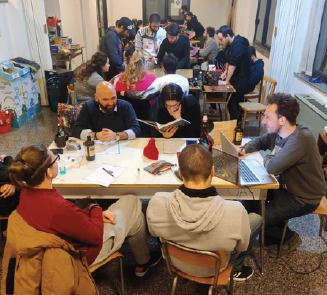
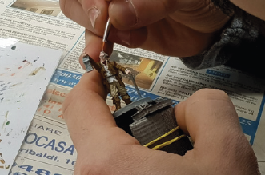

Siamo ragazzi, amici, che per caso si sono ritrovati ad avere una passione in comune: quella per il gioco di ruolo e il gioco da tavolo. Siamo amici che adesso hanno un obbiettivo: creare una grande associazione, una community attiva, stabile e allo stesso tempo in continua evoluzione, che promuova il gioco di ruolo e da tavolo, in ogni sua forma, nel territorio del Piceno, valorizzandone la dimensione relazionale e la forte valenza sociale, in contrapposizione all’isolamento e all’alienazione associate ad altre forme moderne di intrattenimento.
Da quattro anni ci riuniamo ogni venerdì per giocare tutti insieme a giochi come Dungeon and Dragons, Warhammer, Starfinder, Brancalonia, 7th Seas, Not the End e molti altri. Oltre al gioco cerchiamo di organizzare anche workshop di pittura per dare vita a miniature ed elementi scenici per aumentare l’esperienza immersiva delle nostre serate.
Il nostro impegno non è focalizzato solo all’attività associativa interna ma anche alla collaborazione con attività commerciali del territorio, tramite l’organizzazione di serate a tema, eventi e collaborazioni con altre associazioni, sia locali che di respiro nazionale.
La pandemia non ha fermato il nostro spirito di avventura!
Abbiamo tenuto viva la nostra community organizzando sessioni di gioco online, creando un server Discord dedicato non solo al gioco di ruolo ma anche ai videogames. La volontà era quella di dare ai ragazzi uno spazio dove poter evadere, anche se virtualmente, dalla routine casalinga imposta da questa situazione.
4
Anni di attività
20+
Eventi locali e nazionali
200+
Serate organizzate con una media di 40 persone presenti
200+
Persone che hanno transitato ai nostri tavoli